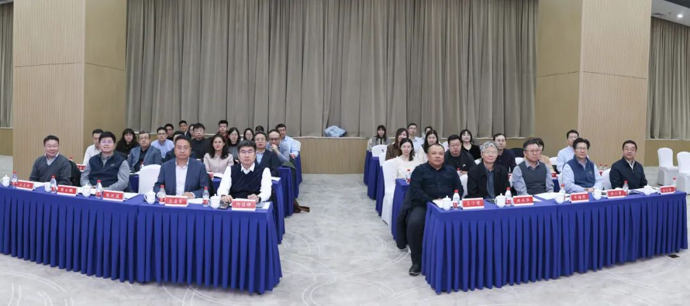

IJTCS-FAW 2026
Attending
Venue, transportation, accommodation, and visa information for participants.
Venue
IJTCS-FAW 2026 will be held at the Culture Building of Renmin University of China in Beijing. The exact conference room and access instructions will be announced.

Renmin University of China, Beijing
Photo: Renmin University of China · cropped for display- Host institution
- Renmin University of China
- City
- Beijing, China
- Conference dates
- –
- Campus / building
- Zhongguancun Campus / Culture Building
- Conference room
- TBA
Travel
Detailed arrival routes and building access information will be added. Suggested content includes airport arrival, railway arrival, local transportation, campus map, and emergency contacts.
Accommodation
Hotel recommendations and booking instructions are to be announced. If the conference negotiates special rates, include booking deadlines and cancellation rules.
Visa Information
Visa-related information and invitation-letter procedure are to be announced. Participants should verify entry requirements through official channels applicable to their nationality and travel route.
Local Information
- Campus map: TBA
- Restaurants: TBA
- Emergency contacts: TBA